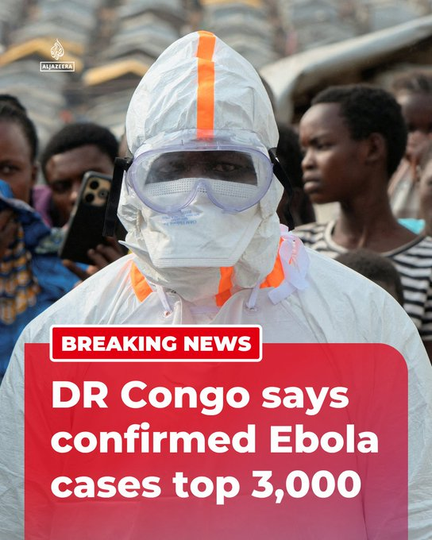

@AJENews
📝 原文: The number of confirmed Ebola cases in the Democratic Republic of Congo has increased to 3,075, including 1,354 deaths, according to government data.More onhttp://Aljazeera.com
🇨🇳 译文: 根据政府数据，刚果民主共和国埃博拉确诊病例已增至 3,075 例，其中 1,354 例死亡。更多信息请访问http://Aljazeera.com


🕒 2026-07-25T23:32:02+00:00